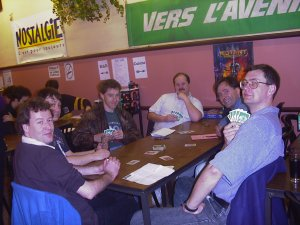

Pictures
from
WorldDipCon '99
3rd April - 5th April 1999
Held at Diplonam '99
in Namur, Belgium
By Emeric
Miszti (UK) |
The
World's Premier
Championship |
|

The scene from the Citadelle overlooking the
old Belgian city of Namur, an excellent location
for plotting the takeover of Europe.
|
Chris Martin, the current World Champ who
plays his Diplomacy on Category 23 (Cat23),
makes
the trip over from the USA to try and become the
first player to successfully defend their title,
or win on a continent outside their own.
|

Bruno André Giradoun (left) and one of the infamous
Blanchot brothers plot another successful French
raid on the title. Bruno is a former World Champ and
the leading French player out of a very large French
contingent. The French have had three World Champions
but were to be disappointed this time as none of
their players were to even make it to the top board.
|

The UK were mounting their strongest challenge
outside of Britain with 17 players making up the
British contingent. Three of these players were to
make the top table, including Ivan Woodward (with
the glasses on the right) grabbing third place. He
was joined on the top table by Duncan Adams (the
guy in the brown leather jacket) as well as the
erstwhile Dave Horton, who became the second
highest placed England Too player
finishing
8th overall. The England Too team were the
early leaders in the Cat
23 Team Tournament
that is currently being played by e-mail.
|
Simon Bouton, one of the six England Too players
who attended WorldDipCon suddenly goes shy, or
is that he wants to maintain a certain mystery :-)
|
Chetan Radia, another England Too player finds that
pulling faces is preferable to winning games. Chetan
was one of the players most unlucky not to make
the top table, producing a top placing and two second
places but finding that this was not quite enough. He
went into the last round in 9th place - just outside !
Chetan actually finished as the highest placed
England Too player in 6th place overall.
|
Let's not forget the guys who made it all possible.
Thiabult Constans is pictured here hard at work
picking the tables for one of the rounds of Dip.
|
No picture gallery would be complete
without a
mugshot of Toby Harris (centre), an England Too
player and current European Champ, who managed
to stay incredibly sober by his standards, but was
still to be disappointed as this title and trophy
continue to avoid his trophy cabinet. He is pictured
here with two Americans, including Chris Martin (right)
who was also to fail in his title defence. |
This is the obligatory 'action' shot taken during my own
most frustrating game. There were three
Yanks in the game, including
Edi Birsan (far right, with beard and glasses)
and Larry Perry (excellent shot of his back). I was
France and spent most of the game crawling all
over England (Edi Birsan). I actually finished on six
centres (my worst of the weekend) but closest to
winning. The Dutch lady, the guy with the pony tail
and the guy at the very back on the left shared top
spot with seven centres each. I apologise that I cannot
remember all their names, but I was pretty fed up.
|
This is the same guy who topped my board as
Germany in the previous picture. He is pictured
here with Van, one of my French friends from
Paris, where we shared many beers at the French
National Diplomacy Championships last December.
|
|
Finally, we come to the Swedish
players. They came
to Namur in a very determined mood with a strong
contingent of fourteen players. Three of these
players play for the Swedish team that has been
such a disappointment in the Cat 23 Team Tournament.
Their position there belies the quality of their players.
Christian Dreyer (also shown at right) has
already become the first foreign player to win the
UK NDC held in November 1998. Their quality play
showed as they managed to get three players onto the
top board. It promised to be a real ding-dong
battle with the UK. Leif Bergman (second from the
right with the beard) was to come runner-up. He did
apologise profusely to me for dropping out of the e-mail
game that I am GM'ing in the Cat23 tournament. |
World Champion 1999
Christian Dreyer
(Sweden)
Of course every tournament can only have a
single winner, and the well deserving winner
on this occasion was on-form Christian Dreyer.
A superb player with many titles under his
wing, as well as being a great ambassador
for his country, he is no doubt a very pleased
young man. He played a well paced game
and sneaked victory on the top board with
8 centres, with Ivan Woodward (UK) and
Leif Bergmann (Sweden) sharing 7 centres.
Final Positions
1. Christian Dreyer (Sweden)
2. Leif Bergman (Sweden)
3. Ivan Woodward (UK) |
CLOSING
COMMENTS
On a final note, it was great to see two other players from Cat23 at WorldDipCon. These
were Stephane Degremont (France - captaining Team Europe in the Team Tournament) and Ron
Poet (UK - who is not strictly speaking Cat 23, but is playing for Vermont Group in the
Cat 23 Team Tournament). This was the first face to face tournament that either of them
have been involved in and I would love comments from both of them - I think they enjoyed
themselves immensely and Ron even managed to top a board which is a fantastic achievement
for his first FTF tournament ! As one of the first people in the UK to start playing by
e-mail but then moving to playing a lot of FTF conventions I have made great efforts to
bring the two communities together. Up until now I have had more success in bringing FTF
players to e-mail but I am delighted to see players moving in the other direction. E-Mail
Dip is great fun but nothing can compare with playing this game the way it was designed to
be played - FACE TO FACE.
I look forward to seeing more of our
American buddies at the next WorldDipCon in Baltimore, Maryland next summer. For now.....
adieu .....
|